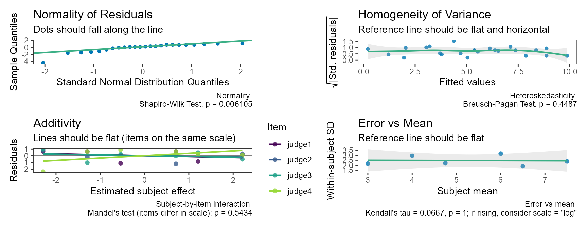

Reliability Analysis
Aaron R. Caldwell
Last Updated: 2026-10-27
Source:vignettes/reliability_analysis.Rmd
reliability_analysis.RmdBackground
Reliability studies ask two related questions. Relative reliability asks whether a measurement ranks subjects consistently; it is summarised by an intraclass correlation coefficient (ICC), the proportion of the observed variance that is due to real differences between subjects. Absolute reliability asks how much a single measurement varies around a subject’s true value; it is summarised by the standard error of measurement (SEM), also called the “typical error” in some fields (Hopkins 2000), and often is expressed as a coefficient of variation. The calculations here were originally derived from Weir (2005), who in turn relied on Shrout and Fleiss (1979) and McGraw and Wong (1996).
SimplyAgree has one function for each question, each
returning a standard htest object with a confidence
interval and, optionally, a test:
| Function | Estimates |
|---|---|
icc_test() |
One ICC |
reli_err_test() |
The SEM, SEE or SEP, in units, sympercents or % of the mean |
mdc_test() |
The minimal detectable change (MDC) |
power_icc(), precision_icc()
|
Sample size for an ICC study |
The older reli_stats() and reli_aov(),
which return everything at once, are superseded (see Legacy functions). This was a deliberate
design choice on my part as I thought the old function was confusing
users.
All functions accept data in three ways. Either a formula,
values ~ item | id; long data, with measure,
item and id column names; or wide data, one
row per subject, with the item columns in col.names. An
item is whatever is repeated: a trial, an occasion, a rater, or
a judge.
As an example, take the data of Shrout and Fleiss (1979) (6 subjects rated by 4 judges).
The intraclass correlation coefficient
icc_test(col.names = judges, data = dat)
#>
#> Two-way, consistency, single-measure ICC [Shrout & Fleiss ICC(3,1)]
#>
#> data: judge1, judge2, judge3, judge4
#>
#> alternative hypothesis: two.sided
#> 95 percent confidence interval:
#> 0.3424648 0.9458583
#> sample estimates:
#> ICC(C,1)
#> 0.7148407Choosing the ICC
The form is set by three arguments, each answering one question about the study and how its results will be used. Answer them in order.
-
Is every subject measured by the same items (the
same trials, raters, or devices)? Yes:
model = "twoway". No, each subject is measured by different items (for example, raters drawn from a pool):model = "oneway", which only has an absolute-agreement form. -
Should systematic differences between items count as
error? Yes,
type = "agreement", when measurements from different items will be used interchangeably or on their absolute values: any rater’s score is taken as it is, scores are compared with a fixed cut-off, or sessions are pooled. No,type = "consistency", when only the subjects’ relative standing matters, or when systematic differences (a learning or fatigue effect, a rater who scores high) are checked and reported separately. -
Will a single measurement or the mean of k be used in
practice? One measurement:
unit = "single". The mean of the same k items as in the study:unit = "average".
Some common designs:
| Study | ICC | Arguments | Matching error statistic |
|---|---|---|---|
| Test-retest, trial effects checked separately (Hopkins 2000; Weir 2005) | ICC(C,1) | defaults |
reli_err_test() (\(\sqrt{MS_E}\)) |
| Test-retest, absolute values used (e.g. compared with a threshold) | ICC(A,1) | type = "agreement" |
reli_err_test(type = "agreement") |
| Inter-rater, the same raters rate every subject, scores used interchangeably | ICC(A,1) | type = "agreement" |
reli_err_test(type = "agreement") |
| Inter-rater, the same raters, only rank order matters | ICC(C,1) | defaults | reli_err_test() |
| Each subject rated by different raters | ICC(1) | model = "oneway" |
reli_err_test(model = "oneway") |
| The score used in practice is the mean of the k ratings or trials | ICC(C,k), ICC(A,k), ICC(k) | unit = "average" |
— |
| Two methods measuring the same quantity (method comparison) | — |
agreement_limit(), ccc_test()
|
limits of agreement |
Whether the items are thought of as fixed (these particular raters) or random (a sample of possible raters) changes how widely the result generalizies, not how it is calculated (McGraw and Wong 1996). The average-measure forms describe the mean of the k items in this study (other values of k would need a Spearman-Brown projection). Whatever the form, report the matching error statistic, and test against a meaningful threshold rather than labeling the estimate “good” or “poor”.
The three arguments map onto the names used by McGraw and Wong (1996) and Shrout and Fleiss (1979):
model |
type |
unit |
McGraw & Wong | Shrout & Fleiss |
|---|---|---|---|---|
| oneway | agreement | single | ICC(1) | ICC(1,1) |
| oneway | agreement | average | ICC(k) | ICC(1,k) |
| twoway | agreement | single | ICC(A,1) | ICC(2,1) |
| twoway | agreement | average | ICC(A,k) | ICC(2,k) |
| twoway | consistency | single | ICC(C,1) | ICC(3,1) |
| twoway | consistency | average | ICC(C,k) | ICC(3,k) |
The default, ICC(C,1), follows Hopkins (2000) and Weir
(2005). In their view, you should
check for systematic change between trials separately (for example with
t.test() for two trials), then report the consistency ICC,
which is tied to the SEM. Others, such as Koo and
Li (2016), recommend absolute
agreement for test-retest studies. I can envision some situations where
Hopkins (2000) and Weir
(2005) advice stands, however, there
are cases where I think systematic changes would be worth counting. I
leave the decision up to you (and whatever the purpose of your study
is), but strongly recommend justifying your choice and being
explicit about the interpretation.
icc_test(col.names = judges, data = dat, type = "agreement")
#>
#> Two-way, absolute agreement, single-measure ICC [Shrout & Fleiss
#> ICC(2,1)]
#>
#> data: judge1, judge2, judge3, judge4
#>
#> alternative hypothesis: two.sided
#> 95 percent confidence interval:
#> 0.01878651 0.76108437
#> sample estimates:
#> ICC(A,1)
#> 0.2897638Related coefficients: Cronbach’s alpha and the CCC
There are two widely reported coefficients that many might not realize are ICCs with a different name.
Cronbach’s alpha is ICC(C,k). With complete data,
Cronbach’s (1951) alpha for k items equals the
average-measure consistency ICC, \((MS_B -
MS_E)/MS_B\) (McGraw and Wong 1996). So alpha is the
reliability of the mean (or sum) of the k items when systematic
differences between items do not count, not the reliability of a single
item; ICC(C,1) is the corresponding single-item figure. This is often
reported as a measure of “internal consistency”. Here alpha computed
from its usual formula matches
icc_test(unit = "average"):
k <- length(judges)
alpha <- k / (k - 1) * (1 - sum(apply(dat, 2, var)) / var(rowSums(dat)))
c(alpha = alpha,
icc_C_k = unname(icc_test(col.names = judges, data = dat,
unit = "average")$estimate))
#> alpha icc_C_k
#> 0.9093155 0.9093155The CCC is analogous to ICC(A,1) for two methods.
Lin’s concordance correlation coefficient (Lin 1989) measures how closely pairs fall
on the line of identity, so systematic differences between the methods
count as disagreement, as in an absolute-agreement ICC. For two methods
it is essentially ICC(A,1): the estimators differ only in using n rather
than n - 1 in the variances, and the difference vanishes as n grows
(Nickerson 1997;
Carrasco and Jover 2003). The two
answer different questions in practice. The the ccc_test()
is meant for comparing two methods (alongside limits of agreement),
while icc_test() for the reliability of a measurement
across trials or raters.
two <- dat[c("judge1", "judge4")]
c(CCC = unname(ccc_test(x = "judge1", y = "judge4", data = two)$estimate),
ICC_A_1 = unname(icc_test(col.names = c("judge1", "judge4"), data = two,
type = "agreement")$estimate))
#> CCC ICC_A_1
#> 0.6052632 0.6478873With only 6 subjects the n versus n - 1 difference is visible; with a few dozen subjects the two estimates agree to about two decimal places.
Testing against a threshold
By default, no test is done. This, like many things in
SimplyAgree, was a design choice on my part as I tend to
see ICCs are most often used for estimation rather than hypothesis
testing, and a test of whether an ICC differs from zero is rarely
informative in my opinion. Additionally, the package provides no
qualitative labels (“good”, “excellent”), because published cutoffs
disagree and the ICC depends on how much subjects differ from each other
(Weir 2005).
To claim that reliability exceeds a value, test against it:
res <- icc_test(col.names = judges, data = dat,
null.value = 0.5, alternative = "greater")
res
#>
#> Two-way, consistency, single-measure ICC [Shrout & Fleiss ICC(3,1)]
#>
#> data: judge1, judge2, judge3, judge4
#> F = 2.2054, df1 = 5, df2 = 15, p-value = 0.108
#> alternative hypothesis: true ICC is greater than 0.5
#> 95 percent confidence interval:
#> 0.4118341 1.0000000
#> sample estimates:
#> ICC(C,1)
#> 0.7148407With a one-sided alternative, the confidence interval is also one-sided, and its lower limit is the bound that corresponds to the test. This approach is appropriate when the only question of interest is whether the ICC exceeds a specified threshold.
Describing the result
summary() describes the result in words, in one of two
styles. With a test, the default is the usual decision about the null
hypothesis:
summary(res)
#> The test is not statistically significant (F(5, 15) = 2.21, p = 0.108;
#> ICC(C,1) = 0.715, 95% lower bound 0.412) at the 0.05 alpha level. The
#> null hypothesis cannot be rejected: at the desired error rate, it
#> cannot be stated that the true ICC is greater than 0.5. The estimate is
#> the two-way, consistency, single-measure ICC (McGraw & Wong ICC(C,1);
#> Shrout & Fleiss ICC(3,1)): the reliability of a single measurement,
#> excluding systematic differences between items. The data had 6 subjects
#> and 4 items (24 measurements, none missing); variance components were
#> estimated by analysis of variance. The interval and F test are exact
#> (McGraw & Wong, 1996).The estimation style, following Greenland (2019) and Rafi and Greenland (2020), describes the interval as a range of values compatible with the data and converts the p-value to an S-value, \(s = -\log_2 p\). This is the bits of information against the tested hypothesis, as surprising as \(s\) heads in a row from a fair coin.
summary(res, style = "estimation")
#> The estimated ICC(C,1) was 0.715 (95% lower compatibility bound 0.412).
#> Values above this bound are the most compatible with the data, given
#> the model and its assumptions. Against the hypothesis that the true
#> ICC(C,1) is at most 0.5, p = 0.108, an S-value of 3.21 bits of
#> information (S = -log2 p): about as surprising as getting 3 heads in a
#> row from 3 tosses of a fair coin. The estimate is the two-way,
#> consistency, single-measure ICC (McGraw & Wong ICC(C,1); Shrout &
#> Fleiss ICC(3,1)): the reliability of a single measurement, excluding
#> systematic differences between items. The data had 6 subjects and 4
#> items (24 measurements, none missing); variance components were
#> estimated by analysis of variance. The interval and F test are exact
#> (McGraw & Wong, 1996).Missing data
method = "anova" (the default) needs every subject
measured on every item. With missing measurements,
method = "reml" fits a linear mixed model; its intervals
use degrees of freedom based on the observed data and are approximate,
so a warning is given.
dat_na <- dat
dat_na$judge2[1] <- NA
icc_test(col.names = judges, data = dat_na, method = "reml")
#> Warning: 4.2% of subject-by-item cells are missing. Intervals and p-values use
#> observed-data degrees of freedom and are approximate; they may be liberal as
#> missingness increases. Consider boot = TRUE.
#>
#> Two-way, consistency, single-measure ICC [Shrout & Fleiss ICC(3,1)]
#> (REML)
#>
#> data: judge1, judge2, judge3, judge4
#>
#> alternative hypothesis: two.sided
#> 95 percent confidence interval:
#> 0.3861657 0.9541005
#> sample estimates:
#> ICC(C,1)
#> 0.7499675Bootstrap intervals and standard errors
The F-based intervals that subject effects and residual errors are
normally distributed. In simulations (3 trials, 10 or 30 subjects, ICC
0.5 or 0.9), they covered 0.92 to 0.97 of the time with normal data but
only 0.80 to 0.93 with skewed or heavy-tailed data. With
boot = TRUE, the interval comes from a nonparametric
bootstrap instead, which helps with clearly non-normal data and about 30
or more subjects. With 10 subjects every method, the bootstrap included,
falls short of its nominal coverage, so a bootstrap is no cure for a
small sample.
When using the bootstrap methods, each replicate resamples subjects
with replacement, keeping all of each subject’s measurements, and refits
the model (replicates times, 1999 by default; with
method = "reml" this means refitting the mixed model each
time, which is slow). The interval type is set by boot_ci;
the default, "auto", picks the type that did best in the
simulations:
| Estimate | method = "anova" |
method = "reml" |
|---|---|---|
ICC (icc_test()) |
studentized | percentile |
SEM, SEE, SEP, consistency or one-way
(reli_err_test()) |
studentized | percentile |
SEM, SEP, two-way agreement (reli_err_test()) |
BCa | percentile |
Any p-value comes from inverting the bootstrap interval, so it is approximate and always agrees with the interval.
set.seed(2026)
icc_test(col.names = judges, data = dat, boot = TRUE, replicates = 499)
#>
#> Two-way, consistency, single-measure ICC [Shrout & Fleiss ICC(3,1)]
#> with nonparametric (subject) bootstrap studentized interval
#>
#> data: judge1, judge2, judge3, judge4
#>
#> alternative hypothesis: two.sided
#> 95 percent confidence interval:
#> 0.3814147 0.9313985
#> sample estimates:
#> ICC(C,1)
#> 0.7148407The hybrid step for agreement
Resampling subjects keeps the same items (judges, trials) in every replicate, so on its own it treats the items as fixed. An absolute-agreement ICC (and the agreement SEM and SEP) treats the items as a sample, and their systematic differences count as error, so plain subject resampling misses the uncertainty that comes from which items happened to be used. In simulations it covered only 0.70 to 0.80 for an agreement ICC of 0.9. Each replicate therefore also multiplies the item mean square by an independent \(\chi^2_{k-1}/(k-1)\) draw, its sampling variation under normal theory. This “hybrid” bootstrap restored coverage to about 0.94 to 0.96 with normal data and 30 subjects. It is applied automatically to the two-way agreement forms; when the items really are fixed it is somewhat conservative, like the F-interval.
set.seed(2026)
icc_test(col.names = judges, data = dat, type = "agreement", boot = TRUE,
replicates = 499)
#>
#> Two-way, absolute agreement, single-measure ICC [Shrout & Fleiss
#> ICC(2,1)] with nonparametric (subject) bootstrap studentized interval
#>
#> data: judge1, judge2, judge3, judge4
#>
#> alternative hypothesis: two.sided
#> 95 percent confidence interval:
#> -0.0459796 0.8763492
#> sample estimates:
#> ICC(A,1)
#> 0.2897638Standard errors (se_method)
Every result reports standard errors in stderr, and the
studentized bootstrap divides each replicate by its own standard error.
Three estimates are available:
-
"jackknife"(default): delete one subject at a time. It averaged 0.89 to 1.08 times the true sampling SD in simulations, including skewed data and missing measurements. It is cheap with complete data and needs n refits withmethod = "reml". -
"influence": a sandwich estimate from each subject’s influence. It is cheap everywhere but too small with few subjects (0.69 to 1.00 times the true SD), and it is the only option for the studentized bootstrap withmethod = "reml". -
"normal": normal theory. It is accurate with normal data (0.87 to 1.04) but too small with skewed or heavy-tailed data (0.60 to 0.80). It depends only on the degrees of freedom, so it cannot be used to studentize.
se_method changes stderr and the
studentized bootstrap, never the F-based (or chi-square) interval and
test.
res_j <- icc_test(col.names = judges, data = dat)
res_n <- icc_test(col.names = judges, data = dat, se_method = "normal")
rbind(jackknife = res_j$stderr, normal = res_n$stderr)
#> ICC z
#> jackknife 0.1290509 0.2878384
#> normal 0.1783508 0.3977982More detail, including the full simulation results, is in
?icc_test and ?reli_err_test.
Plots and diagnostics
plot() shows each subject’s measurements across the
items (grey), with the item means and their 95% confidence intervals
(blue), so systematic differences between items stand out against the
spread of subjects.

Other views are chosen with type:
"subjects" orders the subjects by their mean and shows each
subject’s measurements, which compares the spread between subjects with
the scatter within subjects (what the ICC summarises);
"items" shows each measurement’s deviation from its
subject’s mean by item (systematic item differences, which count as
error for an agreement ICC but not for a consistency ICC); and
"pairs" plots each pair of items against each other with
the line of identity.
plot(res, type = "subjects")
check() gives model diagnostics. The plot displays the
normality and homogeneity of the residuals, and the within-subject SD
against the subject mean. An SD that rises with the mean means the error
grows with the size of the measurement, and a coefficient of variation
(reli_err_test(scale = "log"), below) describes it better
than an error in units.
check(res)
Measurement error
reli_err_test() estimates the standard error of
measurement (SEM), estimate (SEE) or prediction (SEP). With the defaults
it gives the “typical error” in the terminology of Hopkins. This is the
\(\sqrt{MS_E}\) from the two-way
analysis of variance, which excludes systematic differences between
trials. As an example, take data set A of Weir
(2005) (8 subjects, 2 trials).
weir <- data.frame(t1 = c(146, 148, 170, 90, 157, 156, 176, 205),
t2 = c(140, 152, 152, 99, 145, 153, 167, 218))
reli_err_test(col.names = c("t1", "t2"), data = weir)
#>
#> Standard error of measurement (two-way, consistency)
#>
#> data: t1, t2
#>
#> alternative hypothesis: two.sided
#> 95 percent confidence interval:
#> 4.996445 15.380402
#> sample estimates:
#> SEM
#> 7.556927To show that the error is smaller than an acceptable value, give it
as null.value (the default alternative is
"less"):
reli_err_test(col.names = c("t1", "t2"), data = weir, null.value = 12)
#>
#> Standard error of measurement (two-way, consistency)
#>
#> data: t1, t2
#> X-squared = 2.776, df = 7, p-value = 0.09508
#> alternative hypothesis: true SEM is less than 12
#> 95 percent confidence interval:
#> 0.00000 13.58094
#> sample estimates:
#> SEM
#> 7.556927The SEE is the standard error of a subject’s estimated true score, and the SEP is used to judge whether a change from the estimated true score is real (Weir 2005). Both depend on the ICC and on how much subjects differ, so the SEM is the better general description of measurement error.
reli_err_test(col.names = c("t1", "t2"), data = weir, stat = "SEP")
#>
#> Standard error of prediction (two-way, consistency) from ICC(C,1)
#>
#> data: t1, t2
#>
#> alternative hypothesis: two.sided
#> 95 percent confidence interval:
#> 6.331135 17.562180
#> sample estimates:
#> SEP
#> 10.5446The SEE and SEP use the SD matched to the ICC’s denominator (for the consistency ICC, \(SD^2 = \sigma^2_{subjects} + \sigma^2_{error}\)), so that \(SD\sqrt{1 - ICC}\) equals the SEM exactly. Weir (2005) uses the SD of all the measurements instead, so his SEE and SEP (7.1 and 10.2 here) are slightly smaller than these (7.35 and 10.54).
Coefficient of variation
When the error grows with the size of the measurements, it is better
expressed relative to them (Atkinson and Nevill 1998; Hopkins 2000).
reli_err_test() gives the coefficient of variation in two
ways.
scale = "log" analyses the log-transformed measurements
and reports 100 times the statistic, in sympercents (Cole 2000). The SEM
keeps its exact interval.
reli_err_test(col.names = c("t1", "t2"), data = weir, scale = "log")
#>
#> Standard error of measurement (two-way, consistency), log scale
#> (sympercents)
#>
#> data: t1, t2
#>
#> alternative hypothesis: two.sided
#> 95 percent confidence interval:
#> 3.327576 10.243176
#> sample estimates:
#> SEM (sympercent)
#> 5.032829A sympercent \(s\) converts to the conventional CV% as \(100\sqrt{\exp((s/100)^2) - 1}\); below about 15% the two are nearly identical (10 sympercents is a CV of 10.03%). The conversion is monotone, so it can be applied to the interval limits too.
scale = "mean" divides the statistic by the grand mean
(the “pooled” CV); its interval allows for the uncertainty in the
mean.
reli_err_test(col.names = c("t1", "t2"), data = weir, scale = "mean")
#>
#> Standard error of measurement (two-way, consistency), as a percentage
#> of the grand mean
#>
#> data: t1, t2
#>
#> alternative hypothesis: two.sided
#> 95 percent confidence interval:
#> 2.731810 8.743404
#> sample estimates:
#> SEM (% of mean)
#> 4.887261In both cases null.value is on the same scale as the
estimate.
MDC, SDD and the repeatability coefficient
The minimal detectable change (MDC), smallest detectable or real
difference (SDD, SRD), “minimal difference” (Weir 2005) and repeatability coefficient
are all the SEM scaled by \(z
\sqrt{2}\): for 95%, \(1.96 \sqrt{2}
\times SEM\), the change between two measurements of one subject
that measurement error alone would exceed only 5% of the time.
mdc_test() computes it, with an interval (the SEM interval,
scaled):
mdc_test(col.names = c("t1", "t2"), data = weir)
#>
#> Minimal detectable change (95%, two-sided) from the standard error of
#> measurement (two-way, consistency)
#>
#> data: t1, t2
#>
#> alternative hypothesis: two.sided
#> 95 percent confidence interval:
#> 13.84918 42.63152
#> sample estimates:
#> MDC
#> 20.94635sided = "one.sided" gives the MDC for a change in one
stated direction, k_avg the MDC for scores that are means
of several trials, and scale = "log" the MDC as a
percentage (in percent, as an increase and a decrease). An
existing SEM can be reused without refitting, as
mdc_test(sem). With two trials the MDC is the half-width of
the limits of agreement of agreement_limit(), which also
reports the bias between trials.1
Differences between raters. The MDC also answers a common inter-rater question: how far apart could two raters’ (or devices’) measurements of the same subject be? Each measurement has error SEM, so their difference has error SD \(\sqrt{2} \times SEM\), the same reasoning as for two occasions. When the raters are interchangeable (any rater’s score is used as it is, and the raters are thought of as drawn from a pool), use the agreement SEM, so that systematic differences between raters count as error:
mdc_test(col.names = judges, data = dat, type = "agreement")
#>
#> Minimal detectable change (95%, two-sided) from the standard error of
#> measurement (two-way, absolute agreement)
#>
#> data: judge1, judge2, judge3, judge4
#>
#> alternative hypothesis: two.sided
#> 95 percent confidence interval:
#> 4.155454 19.951684
#> sample estimates:
#> MDC
#> 6.937214Two of the judges differing by less than this would be consistent
with measurement error alone. The consistency SEM would leave out the
judges’ systematic differences, which are large here, and give an MDC of
only about 2.8. For two particular raters,
agreement_limit() reports their bias and the spread around
it separately. The SEP is not the statistic for this. The SEP relates to
a change from a subject’s estimated true score, and \(1.96 \times SEP\) does not bound the
difference between two raters.
I do want to quickly make an aside about what the MDC is not. I write this mainly as resolution to my own confusion and what I have seen written out in the scientific literature. The MDC is a threshold for one individual’s change. It is not a threshold for an average (group) effect. The uncertainty of a mean change shrinks with the number of subjects, so a mean effect well below the MDC can be estimated precisely and be clearly different from zero. An effect smaller than the MDC is small relative to one person’s measurement noise; that does not make it noise (i.e., the effect can be “real”). The MDC should never be used to count “responders”. An observed change mixes the true response with within-person variation, so even if everyone responded identically, some would exceed the MDC and some would not (Senn 2004). Real differences in response need a control group or replicated crossover designs (Atkinson and Batterham 2015; Senn 2016).
The MDC and a change that “matters”
Again, I want to briefly highlight another common area of confusion.
Whether a change matters needs an external anchor, such as a
clinically important difference. The MDC is not such an anchor. But, you
can give an anchor it as null.value to test whether the MDC
is below it, i.e. whether such a change can be told apart from
measurement error on an individual level:
mdc_test(col.names = c("t1", "t2"), data = weir, null.value = 30)
#>
#> Minimal detectable change (95%, two-sided) from the standard error of
#> measurement (two-way, consistency)
#>
#> data: t1, t2
#> X-squared = 3.4125, df = 7, p-value = 0.1556
#> alternative hypothesis: true MDC is less than 30
#> 95 percent confidence interval:
#> 0.00000 37.64374
#> sample estimates:
#> MDC
#> 20.94635A “smallest worthwhile change” (SWC) computed from the same reliability data is not such an anchor. With 0.2 times the between-subject SD (Hopkins 2004), its ratio to the SEM is \(0.2/\sqrt{1 - ICC}\), a restatement of the ICC. Hopkins (2004) offers it as a default (e.g. for fitness tests in team sports) when no relationship to a real outcome is available, and it should be treated as such a fallback when nothing else is available.
Repeat measurements and occasions
Sometimes each rater (or device) measures each subject more than
once. Let’s say 3 sonographers each scan 20 participants twice.
icc_test() and reli_err_test() stop with such
data, because one measurement per subject and rater cannot separate two
different error. Essentially, the scatter of one rater’s repeat scans
(intra-rater error, or repeatability) and the disagreement between
raters (inter-rater error). reli_facet_test() fits the
generalizability-theory model for these designs (Brennan 2001).
One warning though: It is experimental, and its name and how it
functions may change in the future.
Exchangeable repeats
When the scans within each subject-by-operator cell are interchangeable (scan 1 and scan 2 mean nothing in themselves), the model is \[y_{pir} = \mu + p + i + (pi) + e_{pir},\] with variance components for subjects (\(\sigma^2_p\)), items (\(\sigma^2_i\), systematic differences between raters), the subject-by-item interaction (\(\sigma^2_{pi}\), raters ranking subjects differently) and repeats (\(\sigma^2_e\)).
set.seed(2)
scans <- expand.grid(scan = 1:2, operator = c("A", "B", "C"), id = 1:20)
subj <- rnorm(20, 50, 5)
bias <- c(A = 0, B = 1.5, C = -1)
inter <- matrix(rnorm(60, 0, 1), 20, 3)
scans$thickness <- subj[scans$id] + bias[scans$operator] +
inter[cbind(scans$id, as.integer(scans$operator))] +
rnorm(nrow(scans), 0, 1.5)
res <- reli_facet_test(thickness ~ operator | id, data = scans)
res
#>
#> Intra-rater ICC (same item, another repeat), for a single measurement
#> with MLS interval
#>
#> data: thickness ~ operator | id
#>
#> alternative hypothesis: two.sided
#> 95 percent confidence interval:
#> 0.8548688 0.9627844
#> sample estimates:
#> ICC(intra)
#> 0.9203712
summary(res)
#> The estimated ICC(intra) was 0.920 (95% compatibility interval [0.855,
#> 0.963]). Values in this interval are the most compatible with the data,
#> given the model and its assumptions. The estimate is the intra-rater
#> ICC (same item, another repeat), for a single measurement, with error
#> from: repeats (within cells). The data had 20 subjects, 3 items (120
#> measurements, 2 measurements per subject-by-item cell); variance
#> components were estimated by analysis of variance (unconstrained). The
#> interval is a modified large-sample (MLS) interval for a ratio of
#> linear combinations of mean squares (Graybill & Wang, 1980; Ting et
#> al., 1990).
#>
#> Variance components:
#> Component Variance 95% CI SD Percent
#> subjects 25.2 [14.1, 54.9] 5.02 80.7
#> items 1.71 [0.340, 73.6] 1.31 5.5
#> subjects x items 1.97 [0.785, 4.07] 1.40 6.3
#> repeats (within cells) 2.35 [1.69, 3.48] 1.53 7.5The summary ends with the variance components, each with an interval
and its share of the variance of a single measurement;
plot(res, type = "components") draws them. The default,
facet = "intra", is the intra-rater ICC which is the
correlation between two scans of the same subject by the same operator,
whose error is the repeat variance only.
facet = "inter" adds the error between operators, with
type as in icc_test():
facet, type
|
Error variance of one measurement | Question |
|---|---|---|
"intra" |
\(\sigma^2_e\) | Same operator, rescanned |
"inter", "consistency"
|
\(\sigma^2_{pi} + \sigma^2_e\) | Another operator, with operator bias handled separately |
"inter", "agreement"
|
\(\sigma^2_i + \sigma^2_{pi} + \sigma^2_e\) | Another operator, scores used interchangeably |
stat = "SEM" gives the square root of the error
variance, and mdc_test() turns it into the smallest
difference beyond measurement error, here between two operators drawn
from the pool:
sem_a <- reli_facet_test(thickness ~ operator | id, data = scans,
stat = "SEM", facet = "inter", type = "agreement")
sem_a
#>
#> Inter-rater SEM (absolute agreement, another item), for a single
#> measurement with MLS interval
#>
#> data: thickness ~ operator | id
#>
#> alternative hypothesis: two.sided
#> 95 percent confidence interval:
#> 2.077813 8.828622
#> sample estimates:
#> SEM(inter,A)
#> 2.456438
mdc_test(sem_a)
#>
#> Minimal detectable change (95%, two-sided) from the inter-rater SEM
#> (absolute agreement, another item), for a single measurement with MLS
#> interval
#>
#> data: thickness ~ operator | id
#>
#> alternative hypothesis: two.sided
#> 95 percent confidence interval:
#> 5.759299 24.471243
#> sample estimates:
#> MDC
#> 6.808773What averaging changes (D-study)
The arguments k_avg and r_avg describe the
score that will be used in practice, and the result is the reliability
of that score, not an average of ICCs. r_avg = 2
is a score that averages 2 scans by one operator; k_avg = 2
is a score that averages one scan from each of 2 operators. These are
the generalizability
(\(E\rho^2\)) and dependability
(\(\Phi\)) coefficients of G theory.
Both divide the subjects’ variance by that variance plus the error
variance of the planned score; they differ in what counts as error. For
facet = "inter", with a score that averages \(k'\) operators (k_avg) and
\(r'\) repeats
(r_avg):
-
Generalizability coefficient (\(E\rho^2\),
type = "consistency"): the reliability of the score when it is used to rank or compare subjects (a relative decision). Only error that can change subjects’ ranks counts, the relative error from the components that involve the subject: \[E\rho^2 = \frac{\sigma^2_p}{\sigma^2_p + \sigma^2_{pi}/k' + \sigma^2_e/(k'r')}.\] An operator’s bias moves every subject’s score by the same amount, so it leaves the ranks alone and is not error here. -
Dependability coefficient (\(\Phi\),
type = "agreement"): the reliability of the score when its value itself is used, e.g. compared with a cut-off or with a score from another operator (an absolute decision). The absolute error adds the facet’s main effect, here the operator bias: \[\Phi = \frac{\sigma^2_p}{\sigma^2_p + \sigma^2_i/k' + \sigma^2_{pi}/k' + \sigma^2_e/(k'r')}.\] \(\Phi\) is at most \(E\rho^2\), and equal only when the operators have no systematic differences.
The two kinds of averaging remove different errors. Averaging repeats by the same operator shrinks only the repeat noise: the agreement error becomes \(\sigma^2_i + \sigma^2_{pi} + \sigma^2_e / 2\), and the operator’s bias and their particular reading of each subject stay in. Averaging over operators shrinks all of it: \((\sigma^2_i + \sigma^2_{pi} + \sigma^2_e) / 2\). So, with two scans per subject to spend:
Would two scans by one operator be better than one scan by each of two operators?
one_op <- reli_facet_test(thickness ~ operator | id, data = scans,
facet = "inter", type = "agreement", r_avg = 2)
two_ops <- reli_facet_test(thickness ~ operator | id, data = scans,
facet = "inter", type = "agreement", k_avg = 2)
c(two_scans_one_operator = unname(one_op$estimate),
one_scan_two_operators = unname(two_ops$estimate))
#> two_scans_one_operator one_scan_two_operators
#> 0.8383870 0.8930915Two operators win here (0.89 against 0.84) because the operator-related components (operator bias and the subject-by-operator interaction) are together larger than the repeat variance; see the component table above. Rescanning wins only when repeat noise is most of the error.
Averaging the repeats before calling icc_test() gives
the coefficient for a score that averages as many scans as the study had
(r_avg = 2 here), not for a single scan. That can be the
right analysis, but only if the repeat measurements are also averaged in
practice.
Shared occasions
To make things more complicated, we could ask whether “measurement 2” is the same event for every rater. If every operator measured everyone on day 1 and again on day 2, the days are shared occasions, and the model is crossed: \[y_{pio} = \mu + p + i + o + (pi) + (po) + (io) + e_{pio},\] adding a day effect common to everyone (\(\sigma^2_o\)), subjects changing between days (\(\sigma^2_{po}\)), and raters drifting differently between days (\(\sigma^2_{io}\)).
Give the occasion column as occasion:
set.seed(4)
days <- expand.grid(day = c("day1", "day2"), operator = c("A", "B", "C"),
id = 1:20)
subj <- rnorm(20, 50, 5)
shift <- c(day1 = 0, day2 = 1.5) # everyone higher on day 2
drift <- matrix(rnorm(6, 0, 0.5), 3, 2) # rater-specific drift
change <- matrix(rnorm(40, 0, 1), 20, 2) # subjects change between days
oi <- as.integer(days$operator); di <- as.integer(days$day)
days$thickness <- subj[days$id] + bias[days$operator] + shift[days$day] +
drift[cbind(oi, di)] + change[cbind(days$id, di)] +
rnorm(nrow(days), 0, 1)
test_retest <- reli_facet_test(thickness ~ operator | id, data = days,
occasion = "day", stat = "SEM",
type = "agreement")
summary(test_retest)
#> The estimated SEM(intra,A) was 1.73 (95% compatibility interval [1.45,
#> 21.4]). Values in this interval are the most compatible with the data,
#> given the model and its assumptions. The estimate is the intra-rater
#> SEM (absolute agreement, same item, another occasion), for a single
#> measurement, with error from: occasions, subjects x occasions, items x
#> occasions, subjects x items x occasions (residual). Treating the
#> occasions as exchangeable repeats would give SEM(intra) = 1.73, the
#> same estimate, but its interval would treat the occasion effects shared
#> by all subjects as independent noise. The data had 20 subjects, 3
#> items, 2 occasions (120 measurements, 1 measurement per
#> subject-by-item-by-occasion cell); variance components were estimated
#> by analysis of variance (unconstrained). The interval is a modified
#> large-sample (MLS) interval for linear combinations of mean squares
#> (Graybill & Wang, 1980; Ting et al., 1990).
#>
#> Variance components:
#> Component Variance 95% CI SD Percent
#> subjects 16.2 [8.90, 35.8] 4.03 78.5
#> items 1.29 [0, 55.4] 1.13 6.2
#> occasions 0.284 [0, 454.] 0.533 1.4
#> subjects x items 0.159 [0, 0.543] 0.399 0.8
#> subjects x occasions 1.75 [0.887, 4.03] 1.32 8.5
#> items x occasions 0.185 [0.0184, 8.81] 0.430 0.9
#> subjects x items x occasions (residual) 0.783 [0.523, 1.30] 0.885 3.8Each facet now has consistency and agreement forms:
facet |
Same | Varies | Agreement adds to the error |
|---|---|---|---|
"intra" |
operator | day | the day shift and rater drift (\(\sigma^2_o + \sigma^2_{io}\)) |
"inter" |
day | operator | operator bias and rater drift (\(\sigma^2_i + \sigma^2_{io}\)) |
"overall" |
nothing | operator and day | all of these |
Both intra-rater SEMs describe one operator measuring the same subject on another day; they differ in what counts as error.
test_retest_c <- reli_facet_test(thickness ~ operator | id, data = days,
occasion = "day", stat = "SEM",
type = "consistency")
sem_row <- function(res) {
c(SEM = unname(res$estimate), lower = res$conf.int[1],
upper = res$conf.int[2])
}
rbind(agreement = sem_row(test_retest),
consistency = sem_row(test_retest_c))
#> SEM lower upper
#> agreement 1.733401 1.449317 21.372134
#> consistency 1.592482 1.291992 2.201003-
Agreement (1.73 here): the error of a single
reading taken on some other day and used as it is. It includes the day
shift that affects everyone (\(\sigma^2_o\)), this operator’s own drift on
that day (\(\sigma^2_{io}\)), the
subject’s own day-to-day change (\(\sigma^2_{po}\)) and the residual. Use it
when a new measurement is compared directly with an earlier one by the
same operator and nothing is done about day effects, the usual clinical
test-retest situation;
mdc_test()on it gives the smallest change between two days that exceeds measurement error. - Consistency (1.59 here): the two systematic parts, \(\sigma^2_o\) and \(\sigma^2_{io}\), are set aside, leaving \(\sigma^2_{po}\) and the residual: the error that remains even if the day’s shift for that operator were known and removed. Use it when day effects are corrected (recalibration, a reference sample each session), when they cancel in the comparison (subjects measured by the same operator in the same session), or when the shift is reported separately, as the mean change between trials (Hopkins 2000; Weir 2005).
The subjects’ own day-to-day change (\(\sigma^2_{po}\)) is error in both: it belongs to the subjects, not the protocol, so the consistency SEM is not “pure instrument noise”. With one measurement per day, biological variation and measurement noise cannot be separated; repeats within a day (two measurements per operator per day) would separate them.
The gap between the two SEMs is what an uncorrected shift costs. Here
the day shift and drift are a small part of the error, so the estimates
are close, but the agreement interval is very wide: the day effect is
estimated from only two days (m - 1 = 1 degree of freedom),
and with two days its uncertainty stays large however many subjects are
measured. More days, not more subjects, would narrow it.
With occasions there are two ways of getting it wrong. Treating the
days as exchangeable repeats (leaving out occasion) gives
the same intra-rater agreement estimate, but its interval
treats the day shift, which every subject shares, as independent noise,
so it is too narrow; and it cannot separate the shift from the noise at
all (test_retest$nested gives that estimate). And for the
consistency SEM it overstates the error, because the day shift is
counted as noise.
Intervals
The intra-rater SEM with repeats, and the inter-rater consistency SEM
and coefficient when r_avg equals the number of repeats,
have exact intervals. The others combine several mean squares and use,
by default, modified large-sample (MLS) intervals (Graybill and Wang
1980; Ting et al. 1990; Burdick and Graybill 1992). In
simulations with normal data, with repeats or with occasions, the MLS
intervals covered at least 0.93 for every statistic, including agreement
statistics with two operators or two days and a large operator bias or
day effect, whereas the Satterthwaite alternative
(ci_method = "satterthwaite") fell to about 0.7. For
agreement statistics the two tails are uneven. When the bound driven by
the operator or day variance (few degrees of freedom) is wide, and the
other is about nominal, so the usual one-sided tests (a coefficient
above a threshold, an SEM below an acceptable error) are conservative.
Leaving out occasion when the measurements were made on
shared days gave intra-rater SEM intervals that covered the true value
as little as a quarter of the time. With skewed or heavy-tailed data the
analytic intervals under-cover (0.78 to 0.90 with repeats), and
boot = TRUE is better. Subjects are resampled with all
their measurements, and for the agreement statistics a “hybrid” step
adds the variation from drawing the operators and days. Agreement
statistics from two or three operators (or days) remain uncertain
however many subjects are measured. ?reli_facet_test gives
the details.
Other relevant R packages of note
Other packages fit related models: VCA
(deeper nesting, laboratory precision designs), rptR
(repeatability of non-Gaussian data), gtheoryr (crossed G-studies with
several facets, D-study optimisation), SixSigma
(ss.rr(), gauge R&R) and MethComp
(method comparison with linked replicates and method-specific
variances).
In SimplyAgree, reli_facet_test() adds
intervals and tests for the coefficients and the intra- and inter-rater
SEMs, and the link to mdc_test().
Planning a reliability study
power_icc() gives the power of the ICC test, or the
number of subjects (n), measurements per subject
(k), or the ICC under the alternative needed for a given
power. For example, the subjects needed to show, with two trials and 80%
power, that the ICC is above 0.6 when it is really 0.8:
power_icc(rho0 = 0.6, rho1 = 0.8, k = 2, power = 0.8,
alternative = "greater")
#>
#> Power calculation for the one-way ICC, ICC(1) (exact F distribution)
#>
#> n = 38.90078
#> k = 2
#> rho0 = 0.6
#> rho1 = 0.8
#> sig.level = 0.05
#> power = 0.8
#> alternative = greater
#>
#> NOTE: n is the number of subjects; round up to a whole number.
#> n = number of subjects, k = measurements per subjectprecision_icc() instead plans for a narrow confidence
interval: here, the subjects needed for a 95% interval no wider than 0.2
around an ICC of 0.8, with three trials, with 80% assurance (the
probability that the interval is that narrow).
precision_icc(rho = 0.8, k = 3, width = 0.2, assurance = 0.8)
#>
#> Precision (confidence interval width) calculation for the one-way ICC, ICC(1) (exact F distribution)
#>
#> n = 48.34247
#> k = 3
#> rho = 0.8
#> width = 0.2
#> conf.level = 0.95
#> assurance = 0.8
#>
#> NOTE: n is the number of subjects; round up to a whole number.
#> n = number of subjects, k = measurements per subject; width = upper minus lower limitBoth are exact for the one-way and consistency ICCs;
method = "approximate" reproduces the published formulas of
Walter et al. (1998) and Zou
(2012) (see also Mondal et al. (2024)). The agreement ICC has no exact
distribution and is not supported. See
vignette("power_sample_size_vignette", package = "SimplyAgree")
for more examples, including average measures, missing measurements, and
how to use these calculations as a guide for agreement ICCs.
Legacy functions
reli_stats() (linear mixed model) and
reli_aov() (analysis of variance) return all six ICCs, the
CV, SEM, SEE and SEP at once. They are superseded but still work.
reli_aov(data = dat, wide = TRUE, col.names = judges)
#>
#> Coefficient of Variation (%): 19.1
#> Standard Error of Measurement (SEM): 1.01
#> Standard Error of the Estimate (SEE): 1.22
#> Standard Error of Prediction (SEP): 1.9
#>
#> Intraclass Correlation Coefficients with 95 % C.I.
#> Model Measures Type ICC Lower CI Upper CI
#> 1 one-way random Agreement ICC1 0.1657 -0.13293 0.7226
#> 2 two-way random Agreement ICC2 0.2898 0.01879 0.7611
#> 3 two-way fixed Consistency ICC3 0.7148 0.34246 0.9459
#> 4 one-way random Avg. Agreement ICC1k 0.4428 -0.88444 0.9124
#> 5 two-way random Avg. Agreement ICC2k 0.6201 0.07114 0.9272
#> 6 two-way fixed Avg. Consistency ICC3k 0.9093 0.67567 0.9859Since version 0.4.0 they use the same engine as
icc_test(). In particular, their ICC intervals are now
two-sided. Previous versions used conf.level in each tail,
so a “95%” interval was really a 90% interval; the old numbers at
conf.level = c are reproduced with
conf.level = 1 - 2 * (1 - c). Their SEE and SEP keep the SD
of all the measurements, as in Weir (2005). See ?reli_stats for
the other changes.
Calculative approach for ICCs
I tend to try and document the calculative approaches where possible.
Below is the step-by-step process for the ICC calculations and their intervals.
Model and mean squares
For n subjects each measured on k items, the two-way model is \(y_{ij} = \mu + s_i + t_j + e_{ij}\), with subject effects \(s_i\) (variance \(\sigma^2_s\)), item effects \(t_j\) (\(\sigma^2_t\)) and error \(e_{ij}\) (\(\sigma^2_e\)). The analysis of variance gives the mean squares for subjects (\(MS_B\), \(n - 1\) df), items (\(MS_J\), \(k - 1\) df) and error (\(MS_E\), \((n-1)(k-1)\) df), and the within-subject mean square \(MS_W = (MS_J + (n-1) MS_E)/n\) (\(n(k-1)\) df). Their expectations are
\[ E(MS_B) = k\sigma^2_s + \sigma^2_e, \quad E(MS_J) = n\sigma^2_t + \sigma^2_e, \quad E(MS_E) = \sigma^2_e. \]
With method = "reml", the variance components come from
a linear mixed model and the mean squares are reconstructed from
them.
Intraclass correlation coefficients
\[ ICC(1) = \frac{MS_B - MS_W}{MS_B + (k-1) MS_W} \]
\[ ICC(A,1) = \frac{MS_B - MS_E}{MS_B + (k-1) MS_E + k (MS_J - MS_E)/n} \]
\[ ICC(C,1) = \frac{MS_B - MS_E}{MS_B + (k-1) MS_E} \]
The average-measure forms are the Spearman-Brown projection of the single-measure form to k items, \(k\rho / (1 + (k-1)\rho)\); for example \(ICC(C,k) = (MS_B - MS_E)/MS_B\) and \(ICC(A,k) = (MS_B - MS_E)/(MS_B + (MS_J - MS_E)/n)\).
Confidence intervals and tests
A two-sided \(1 - \alpha\) interval uses \(\alpha/2\) in each tail (Shrout and Fleiss 1979; McGraw and Wong 1996). For ICC(1) and ICC(C,1), with \(F = MS_B/MS_W\) or \(MS_B/MS_E\) and its degrees of freedom \((\nu_1, \nu_2)\),
\[ F_L = \frac{F}{F_{1-\alpha/2;\, \nu_1, \nu_2}}, \quad F_U = F \cdot F_{1-\alpha/2;\, \nu_2, \nu_1}, \quad \text{limits} = \frac{F_{L,U} - 1}{F_{L,U} + k - 1}. \]
These intervals are exact. For ICC(A,1) the denominator degrees of freedom are approximated (Satterthwaite 1946; McGraw and Wong 1996),
\[ v = \frac{(a MS_J + b MS_E)^2}{\frac{(a MS_J)^2}{k-1} + \frac{(b MS_E)^2}{(n-1)(k-1)}}, \quad a = \frac{k \hat\rho}{n(1-\hat\rho)}, \quad b = 1 + \frac{k\hat\rho (n-1)}{n(1-\hat\rho)}, \]
and with \(F^*_{L} = F_{1-\alpha/2;\, n-1, v}\) and \(F^*_{U} = F_{1-\alpha/2;\, v, n-1}\),
\[ L = \frac{n(MS_B - F^*_L MS_E)}{F^*_L (k MS_J + (kn - k - n) MS_E) + n MS_B}, \quad U = \frac{n(F^*_U MS_B - MS_E)}{k MS_J + (kn - k - n) MS_E + n F^*_U MS_B}. \]
The tests of \(H_0: \rho = \rho_0\) are the F tests of McGraw and Wong (1996): for ICC(C,1), \(F = (MS_B/MS_E)(1-\rho_0)/(1 + (k-1)\rho_0)\) on \((n-1, (n-1)(k-1))\) degrees of freedom, and similarly for the other forms.
Standard errors of measurement
| Statistic | Estimate | Interval |
|---|---|---|
| SEM, two-way consistency | \(\sqrt{MS_E}\) | exact \(\chi^2\) |
| SEM, two-way agreement | \(\sqrt{(MS_J + (n-1)MS_E)/n}\) | Satterthwaite \(\chi^2\) |
| SEM, one-way | \(\sqrt{MS_W}\) | exact \(\chi^2\) |
| SEE | \(SD\sqrt{ICC(1-ICC)}\) | delta method, log scale |
| SEP | \(SD\sqrt{1-ICC^2}\) | delta method, log scale |
For example, the exact interval for the consistency SEM is \(\sqrt{\nu MS_E / \chi^2_{1-\alpha/2;\,\nu}}\) to \(\sqrt{\nu MS_E / \chi^2_{\alpha/2;\,\nu}}\) with \(\nu = (n-1)(k-1)\).
Inter-Rater Reliability
The ICC is for continuous measurements. For categorical or ordinal
ratings (a diagnosis, a grade, a severity scale), agreement between
raters is summarised instead by chance-corrected agreement coefficients
such as Gwet’s AC1, Fleiss’ kappa or Krippendorff’s alpha
(cac_test()), or, for ordinal ratings from many raters, by
the model-based kappa of Nelson and Edwards (2015) (ord_kappa_test()).
For example, with 4 raters on a 5-point scale:
ratings <- data.frame(
Rater1 = c(1, 2, 3, 3, 2, 1, 4, 1, 2, NA, NA, NA),
Rater2 = c(1, 2, 3, 3, 2, 2, 4, 1, 2, 5, NA, NA),
Rater3 = c(NA, 3, 3, 3, 2, 3, 4, 2, 2, 5, 1, 3),
Rater4 = c(1, 2, 3, 3, 2, 4, 4, 1, 2, 5, 1, NA))
cac_test(col.names = c("Rater1", "Rater2", "Rater3", "Rater4"),
data = ratings, weights = "quadratic")
#>
#> Weighted (quadratic) Gwet's AC2 for 4 raters
#>
#> data: Rater1, Rater2, Rater3, Rater4
#>
#> alternative hypothesis: two.sided
#> 95 percent confidence interval:
#> 0.6851814 1.0000000
#> sample estimates:
#> Gwet's AC2
#> 0.9140007See
vignette("categorical_agreement", package = "SimplyAgree")
for how to choose a coefficient, weights for ordinal scales, the
model-based kappa, and comparisons between groups of raters or
subjects.